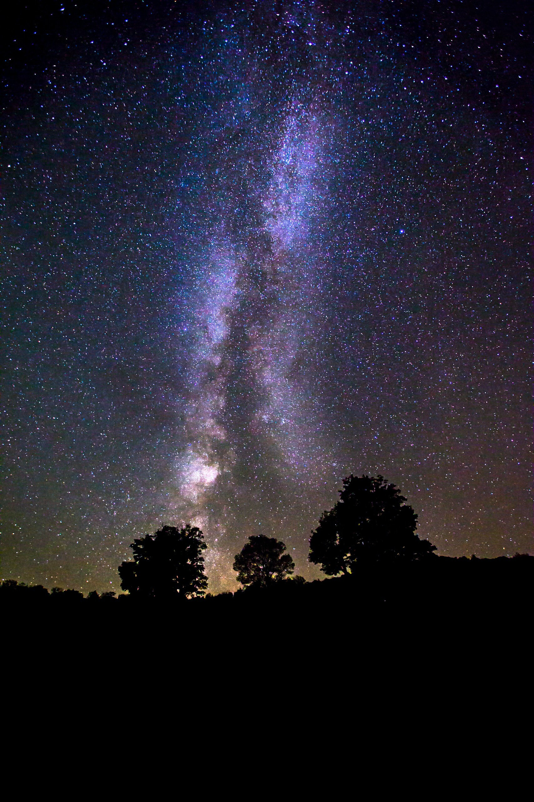
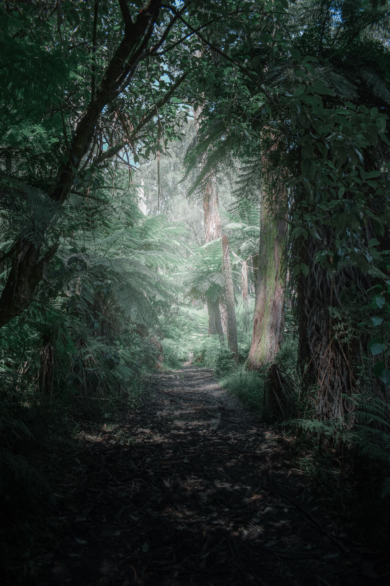
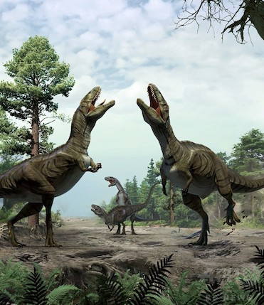
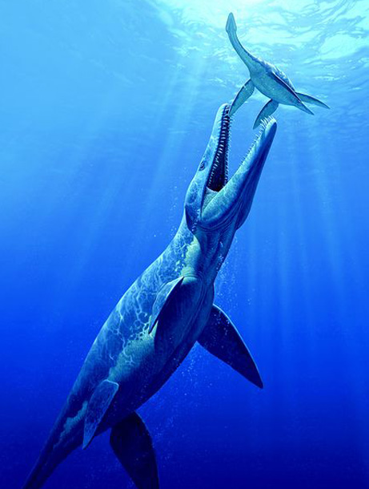
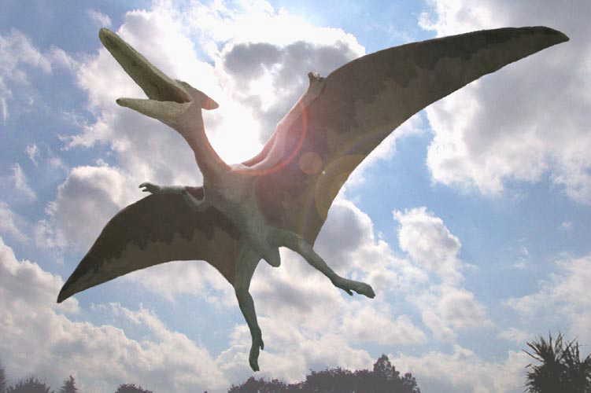

- 
- 

Dinosaurs
DINOSAURS
ARE FULL OFMILLION
YEARS AGO
So far, approximately 800 species of dinosaurs
have been discovered, excluding birds.
From 1824 to the present,
there are more than 1,400 named dinosaurs,
many of which did not follow international naming rules
or meet the conditions for recognition as a new species.
Approximately 600 of them have become "invalid names".
The discovery of new dinosaurs is still ongoing,
and the number of new dinosaurs found is increasing.
According to one theory,
it is said that there will be more than 2000,
and future research is expected.
Land

Dinosaurs, along with pterosaurs and crocodiles, are called archosaurs,
and they have the characteristics of tank teeth, extended mouth, raised head,
and a window in front of the orbit.
The characteristics of archosaurs are not only the characteristics of these head and jaw bones,
but especially in dinosaurs, the way of walking is an animal
that can walk directly underneath by extending its legs directly
under the body and moving it back and forth.
As a result, the dinosaurs were able to walk efficiently and freely,
and even when they grew up, they were able to support and walk.
Sea

The so-called sea dinosaurs are similar in body to current fish,
but belong to marine reptiles, such as "ichthyosaurs," and "Plesiosauria,"
which have a body similar to that of Nessie in Lake Nessi.
Some of them lived on land, such as "Rinryurui",
but the "crocodile" and "turtles" that still inhabit are also sea animals that lived in the same period as dinosaurs. Inhabited the earth as.
Archelons are a typical species of turtles,
and although they existed thousands of years ago, they are very similar to today's sea turtles.
In addition, although creatures with similar shapes are now extinct,
"crocodile" dinosaurs that live in the sea with a head shaped like a crocodile like Metriorhynchus also exist on the ancient earth.
Sky

A typical pterosaur is "Pteranodon",
which was a very large animal with wings spread up to nearly 10m.
In addition, "Quetzalcoatlus" is said to have been the largest flying animal in history,
and it is a dynamic world where large creatures that are unthinkable in modern times fly in the air on the ancient earth.
Also, although "Eudimorphodon" is small, it is said to have a long tail like a devil, brand flying animals with such a very long tail can no longer be seen.
Pterosaurs, of which various species existed, were animals that lived for a long time until the late Cretaceous,
like dinosaurs, and are thought to have been excellent hunters with excellent abilities.